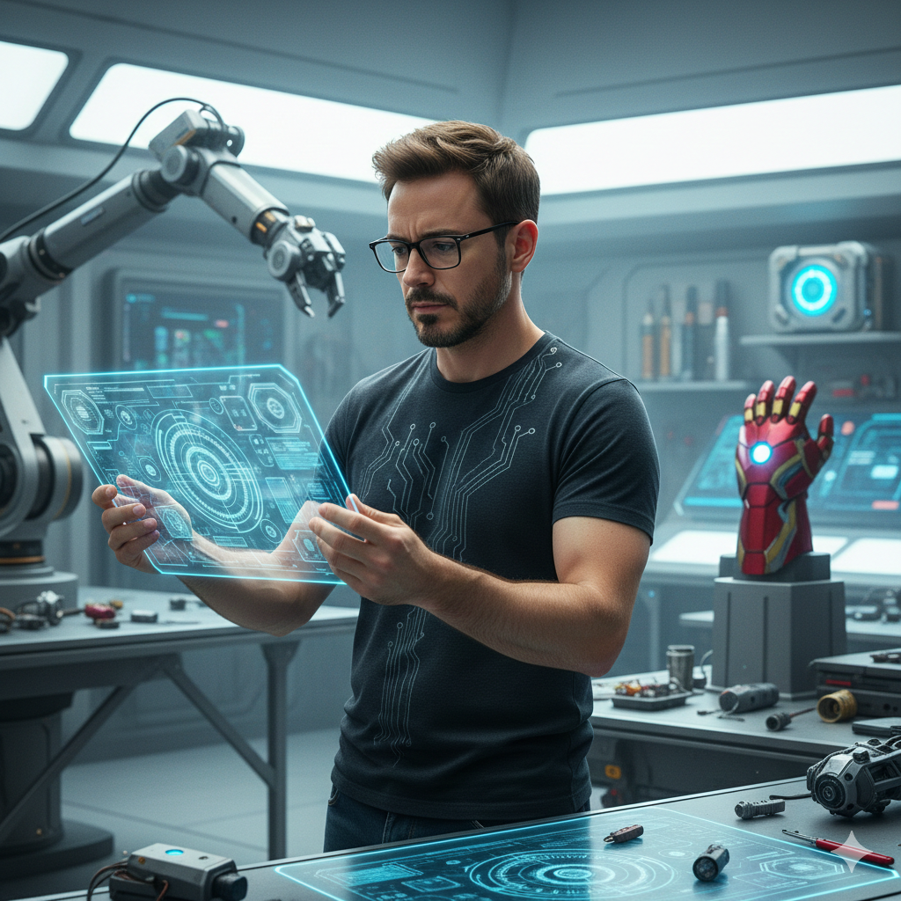

Des professionnels passionnés qui partagent leurs connaissances et leur expérience.
Développeur Web & Étudiant en Ingénierie Logicielle

Senior Developer Product Designer & IA Architect
VP Design IA & Product Strategy
Expert en optimisation de modèles IA